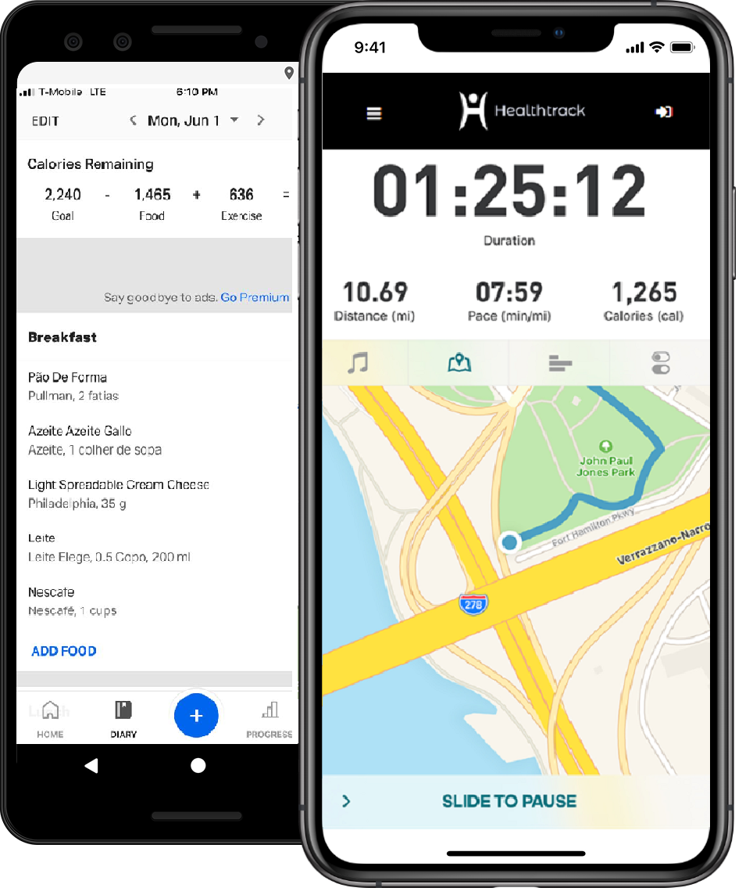

Tenha uma vida saudável. Comece hoje a controlar sua alimentação, ou quem sabe praticar um novo esporte! Aproveite 15 dias
de total acesso à nossa plataforma, e deixe as desculpas pra atrás.
CONTROLE SUA ROTINA. VEJA OS RESULTADOS
Ao monitorar suas atividades físicas, enquanto controla sua alimentação, você verá a diferença em sua
qualidade de vida em pouco tempo. Disponível para Android e iOS.

SOBRE O HEALTHTRACK
Porque é importante um estilo de vida saudável?
Um estilo de vida saudável ajuda a manter o corpo em forma e a mente alerta.Ajuda também a proteger de doenças, além de ajudar
a impedir que as doenças crônicas piorem. Isso é importante porque a medida que envelhecemos surgem alterações nos músculos
e nas articulações que trazem um declínio na força física. Hábitos saudáveis devem ser desenvolvidos quando ainda jovens, e
mantidos durante toda a vida adulta até a idade madura. Por isso, precisa-se viver com mais saúde em todas as etapas da vida,
privilegiando a prática de atividades físicas no cotidiano e no lazer e o acesso a alimentos saudáveis.
O Healthtrack
O Healthtrack é um projeto proposto pela FIAP aos seus alunos, com o objetivo de desenvolver-se uma plataforma que
auxilie o usuário na tarefa de desenvolver um estiulo de vida saudável, através do monitoramento de dados de saúde,
alimentação e atividades físicas.